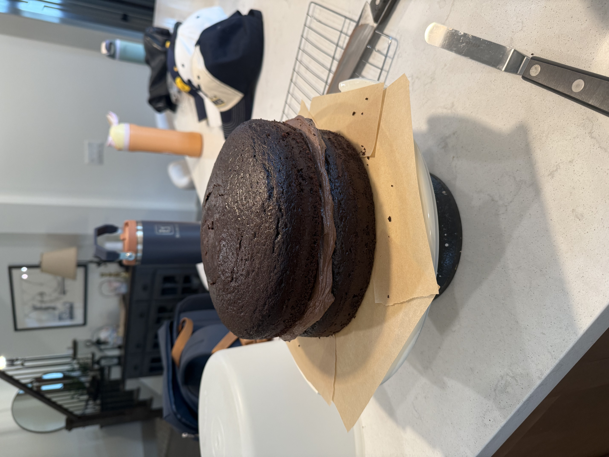
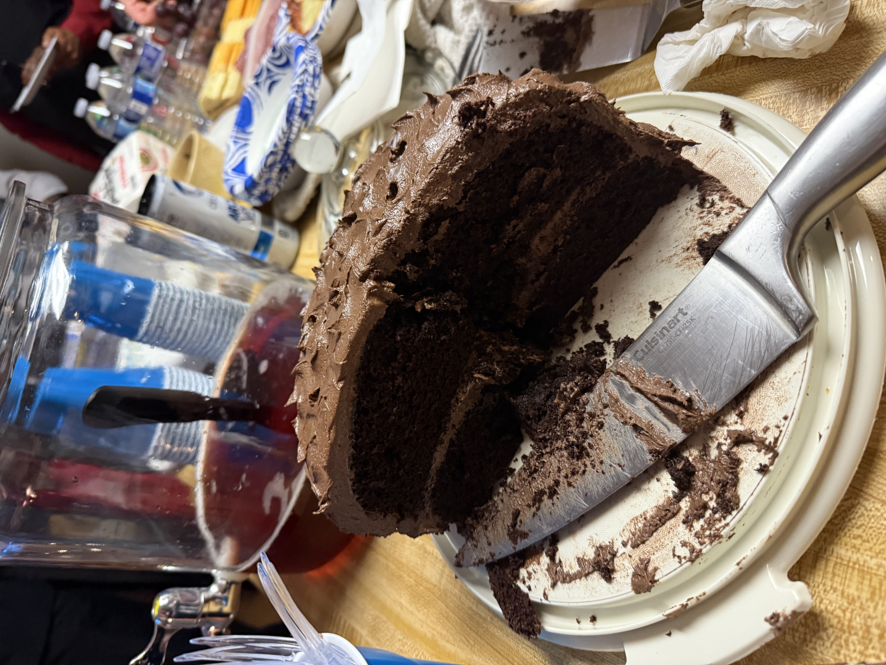

Ingredients
- 1 3/4 cups (364g) granulated sugar
- 3/4 cup (84g) Dutch-processed cocoa powder
- 2 cups (256g) all-purpose flour
- 2 teaspoons baking powder
- 1 1/2 teaspoon baking soda
- 1 teaspoon salt
- 1/2 cup (105g) vegetable oil
- 2 teaspoons vanilla extract
- 2 large eggs
- 1 cup (227g) buttermilk
- 3/4 cup (178g) strongly brewed coffee
- Frosting: 1 1/2 cups (339) unsalted butter, room temperature
- 1 cup (112g) Dutch-processed cocoa powder
- 5 cups (560g) powdered sugar
- 1/4 cup (60g) milk, slightly warmed
- 1/4 cup (60g) heavy cream, slightly warmed
- 3 tablespoons corn syrup
- 1 tablespoon vanilla extract
- 1/2 teaspoon salt
💡 Click ingredients to check them off as you gather them!
Instructions
- Prep: Preheat the oven to 350°F. Grease and line two (or three for a three layer cake!) 8-inch cake pans with parchment paper. Set aside.
- Mix dry ingredients: In a large mixing bowl, whisk together the sugar, cocoa powder, flour, baking powder, baking soda, and salt. Make a well in the center of the dry ingredients. Add the oil, vanilla, eggs, and buttermilk into the well.
- Add wet ingredients: Starting from the center of the bowl, whisk outward, pulling the dry ingredients into the middle. Whisk until no lumps remain—the batter will be thick. Pour in the hot coffee, whisking until the batter is smooth.
- Bake cake: Divide the batter evenly into the prepared pans and bake until the cakes are risen, the tops springs back to the touch, and a butter knife inserted in the center of the cakes comes out with just a few moist crumbs attached, 25 to 30 minutes for two cakes or 20 to 25 minutes for three cakes.
- Once the cakes have cooled, make the frosting: In a stand mixer fitted with a paddle attachment, cream the butter and cocoa powder on low speed for 30 seconds until smooth and no streaks of cocoa remain. Add in the powdered sugar, warm milk, heavy cream, corn syrup, vanilla, and salt. Beat on low speed, gradually increasing to medium, scraping down the sides and bottom of the bowl as needed, until the frosting is fluffy and has lightened in color slightly, about 30 seconds.
- Frost the cake: Place the first cake layer right side up onto a cake stand or plate. Spread a large dollop of frosting on top, using an offset spatula to spread a thick layer evenly to the edges. Repeat with the rest of the cake layers and frosting. Use the remaining frosting to frost the sides of the cake. Use the back of a large spoon to create swirls around the top and sides of the cake and decorate as desired. Enjoy!

